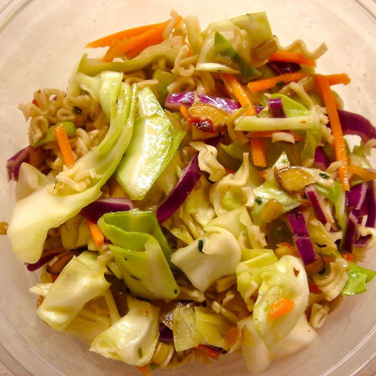

Ramen Cabbage Salad

Description
This salad is fast and easy to prepare but does not hold well and is best if eaten immediately!
Ingredients
- ½ large head cabbage, coarsely chopped
- 1 (3 ounce) package ramen noodles, crushed
- ½ cup sunflower seeds
- ½ cup vegetable oil
- 3 tablespoons white sugar
- 3 tablespoons distilled white vinegar
Steps
- Toss together the cabbage, noodles and sunflower seeds or almonds.
- Whisk together the ramen flavor packet, oil, sugar and vinegar. Pour over cabbage mixture and toss evenly to coat.